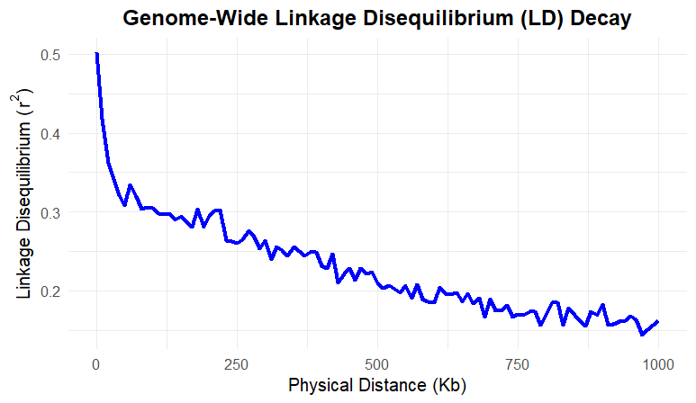

Linkage disequilibrium (LD) measures non-random association between alleles at different loci. This workflow calculates pairwise (r^2) for SNP pairs, derives physical distance from their base-pair positions, then summarizes mean (r^2) in 10-kb bins.
PLINK must be installed and accessible at the path specified in the script. LD calculation can produce a very large file, so use a clearly stated window and retain QC-filtered variants.
Analysis workflow
Genotype QC → pairwise r² → distance bins → curve
R code
Run PLINK and plot mean LD by distance
library(stringr)
library(dplyr)
library(ggplot2)
# 1. Provide the exact path to your PLINK executable
plink_path <- "C:/Users/DELL/Documents/plink_win64/plink.exe"
setwd("C:/Users/DELL/Documents/AM2017_Data")
# Function to run PLINK
runPLINK <- function(PLINKoptions = "") {
system(paste(shQuote(plink_path), PLINKoptions))
}
# Convert VCF to PLINK binary files after marker QC
runPLINK("--vcf 5OK_AM17.vcf --maf 0.05 --geno 0.1 --make-bed --out geno_qc")
# Calculate pairwise linkage disequilibrium (LD)
runPLINK("--bfile geno_qc --r2 --ld-window 99999 --ld-window-kb 1000 --ld-window-r2 0 --out barley_LD")
# Read the LD results
LD <- read.table("barley_LD.ld", header = TRUE)
# Calculate physical distance between SNP pairs (kb)
LD$Distance_kb <- abs(LD$BP_B - LD$BP_A) / 1000
# Group distances into 10-kb bins and calculate mean and median r-squared
ld_decay <- LD %>%
mutate(Bin = round(Distance_kb / 10) * 10) %>%
group_by(Bin) %>%
summarise(
Mean_R2 = mean(R2, na.rm = TRUE),
Median_R2 = median(R2, na.rm = TRUE),
.groups = "drop"
)
# Plot LD decay
ggplot(ld_decay, aes(x = Bin, y = Mean_R2)) +
geom_line(color = "blue", linewidth = 1.2) +
labs(
title = "Genome-Wide Linkage Disequilibrium (LD) Decay",
x = "Physical Distance (Kb)",
y = expression(paste("Linkage Disequilibrium ( ", r^2, ")"))
) +
theme_minimal(base_size = 12) +
theme(
plot.title = element_text(face = "bold", hjust = 0.5),
plot.subtitle = element_text(hjust = 0.5)
)
# Estimate the last distance bin with mean r-squared >= 0.2
LD_cutoff_values <- ld_decay %>%
filter(Mean_R2 >= 0.2) %>%
summarise(
LDecay_Distance_Kb = if (any(Mean_R2 >= 0.2)) {
max(Bin[Mean_R2 >= 0.2], na.rm = TRUE)
} else {
NA_real_
}
)
print(LD_cutoff_values)LD-decay figure
Reference visualization for this project

Estimating an LD-decay distance
Choose and report a threshold transparently
A common descriptive approach is to report the distance at which mean r² falls below a preselected threshold. Define the threshold and whether the curve must remain below it across subsequent bins before reporting a decay distance. The 2022 AM2017 article should be cited for its GWAS findings, not as the source of a new LD-decay estimate unless that estimate is independently verified.
# This reproduces the threshold summary used in the main workflow
LD_cutoff_values <- ld_decay %>%
filter(Mean_R2 >= 0.2) %>%
summarise(
LDecay_Distance_Kb = max(Bin, na.rm = TRUE)
)
print(LD_cutoff_values)The script reports the largest distance bin with mean r² ≥ 0.2. This is the last bin above the threshold, not proof that mean r² remains below 0.2 at every larger distance. Also, the LD file may include pairs from different chromosomes; physical distance calculated from base-pair coordinates is interpretable as within-chromosome distance only when both SNPs are on the same chromosome.
Reproducibility notes
Do not group SNP pairs across chromosomes as if they were physically adjacent. The genome-wide curve here is a broad summary; for chromosome-specific curves, calculate distances only for pairs on the same chromosome and facet by chromosome. PLINK options and missingness filtering should be recorded with the results.